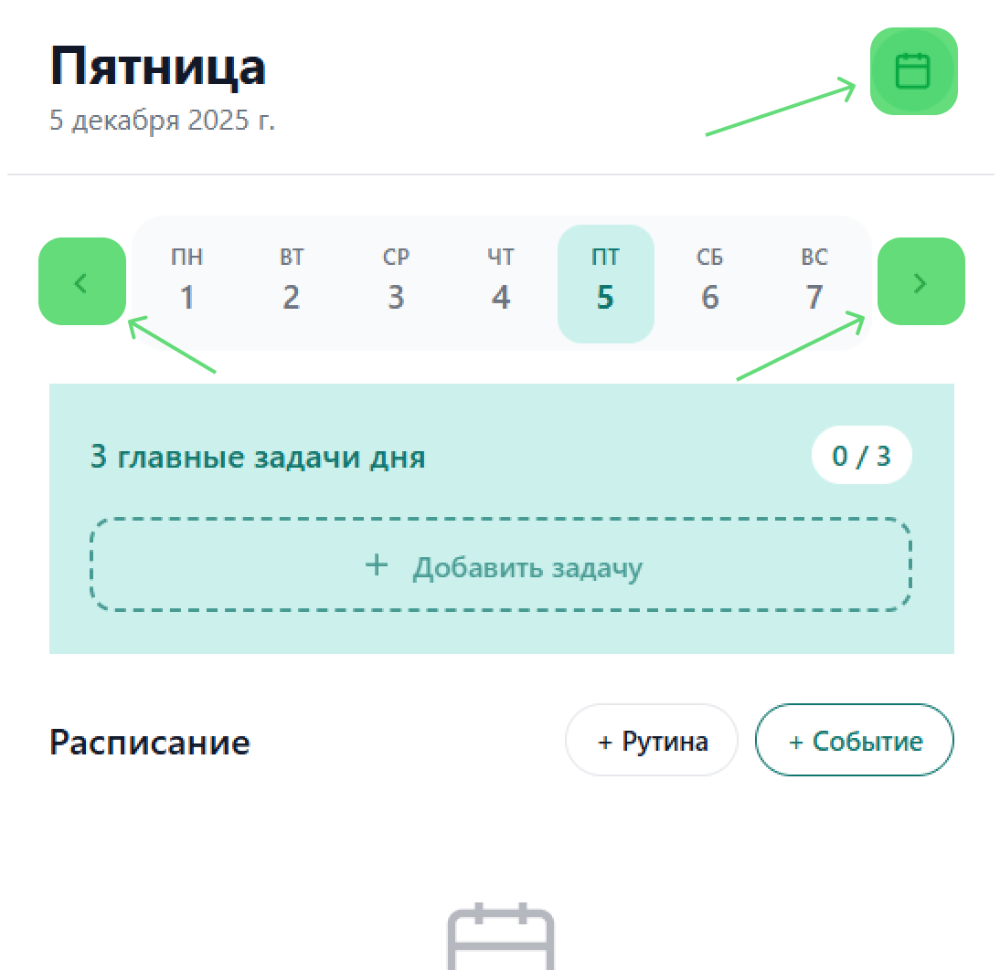
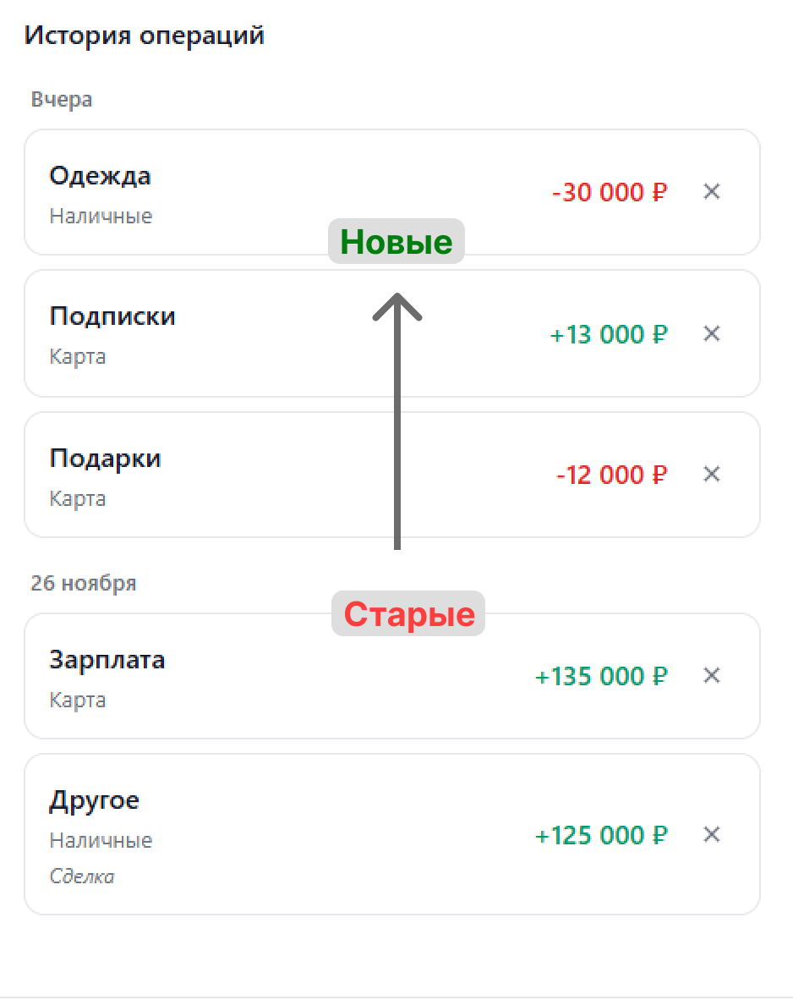
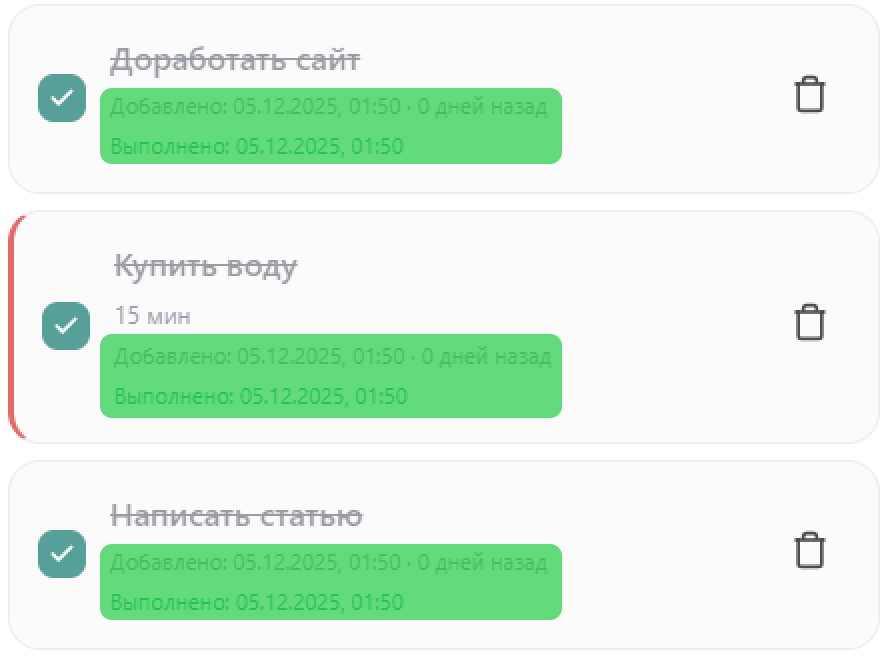
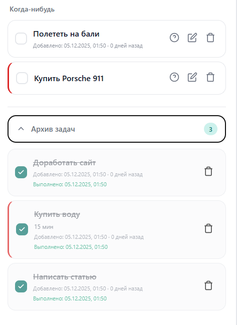
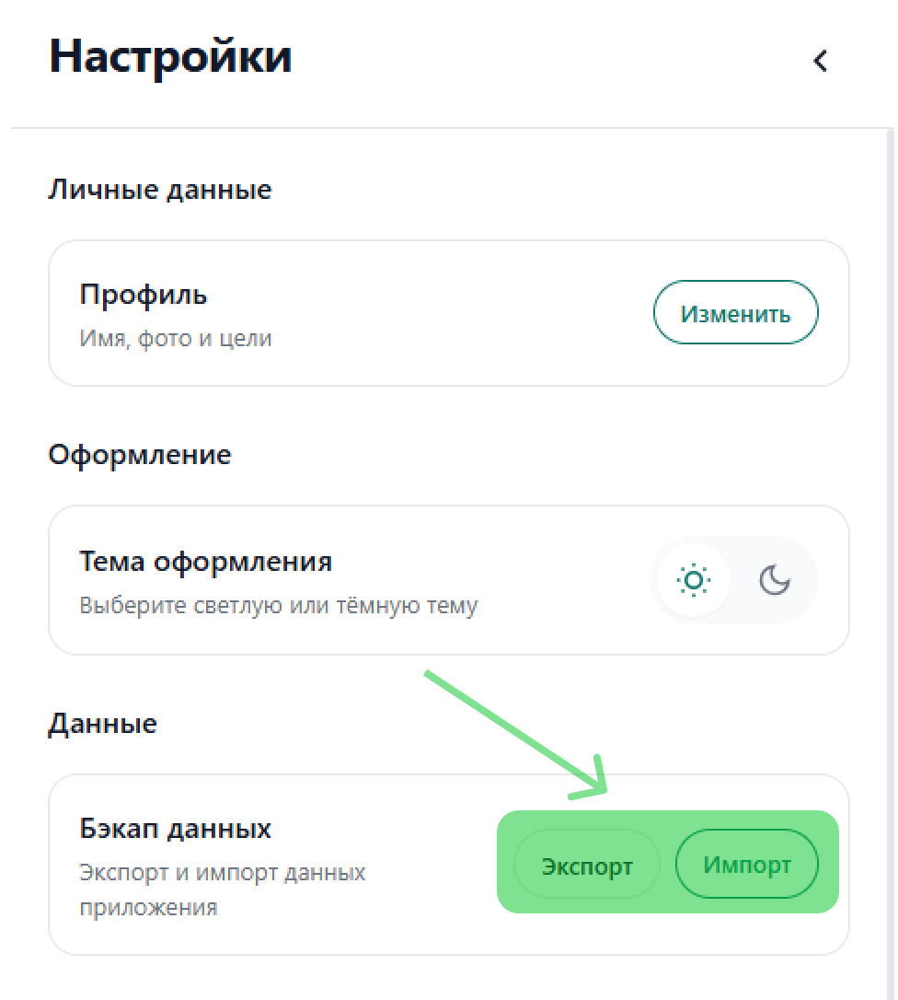
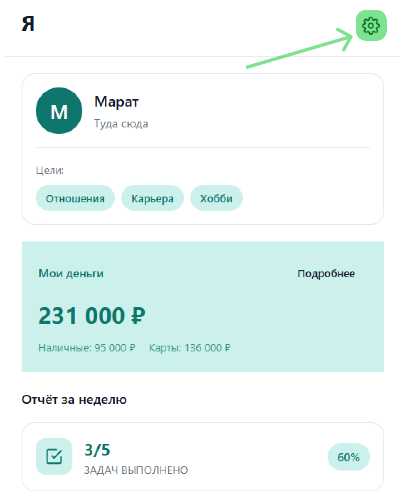
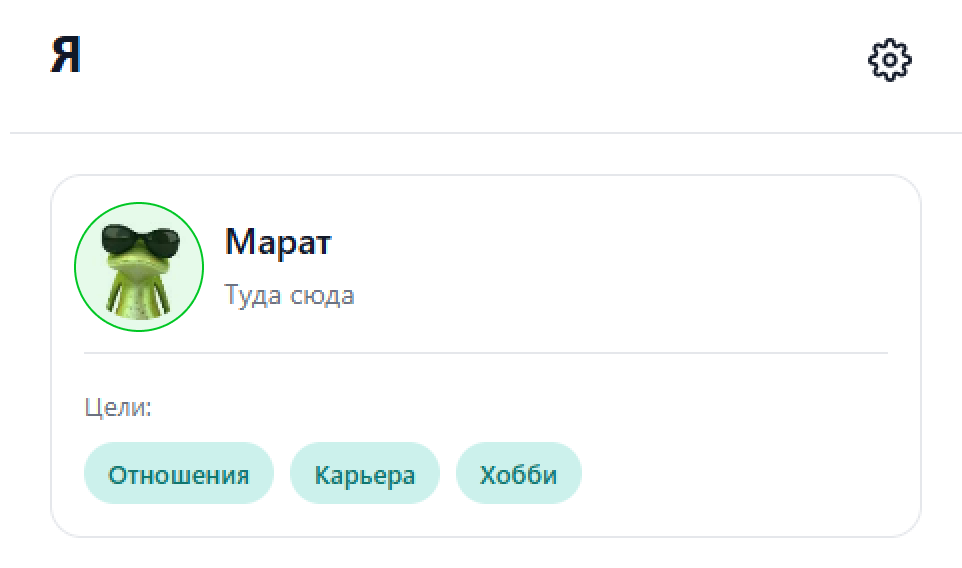

NEW
Просмотр будущих и прошлых дат
Теперь можно просматривать задачи на любую дату — планируйте наперёд или анализируйте прошлое.
- Переход к любой дате
- Просмотр задач за прошлые дни
- Планирование будущих дней

NEW
Листание недели
Удобная навигация по неделям с помощью стрелок и свайпов.
- Стрелки влево/вправо для переключения недель
- Поддержка свайпов на мобильных устройствах
- Быстрый возврат к текущей неделе

NEW
Новая сортировка финансов
Последние операции теперь отображаются сверху списка.
- Новые записи сверху
- Удобный просмотр последних операций
- Логичный порядок отображения

NEW
Дата создания и выполнения задач
Каждая задача теперь хранит информацию о датах создания и выполнения.
- Автоматическая фиксация даты создания
- Запись даты выполнения при завершении
- Отслеживание времени выполнения задач

NEW
Архив выполнённых задач
Все завершённые задачи сохраняются в архиве для анализа продуктивности.
- Отдельный раздел архива
- История всех выполненных задач
- Статистика выполнения

NEW
Бэкап данных
Экспорт и импорт всех данных в формате JSON для резервного копирования.
- Экспорт всех данных в JSON
- Импорт из резервной копии
- Перенос данных между устройствами
- Защита от потери данных

NEW
Миграция на IndexedDB
Полный переход на IndexedDB для надёжного хранения больших объёмов данных.
- Увеличенный лимит хранения
- Более быстрая работа с данными
- Надёжность хранения
- Автоматическая миграция из localStorage
NEW
Страница «Настройки»
Новая страница настроек с быстрым доступом из профиля.
- Кнопка настроек в правом верхнем углу страницы «Я»
- Централизованное управление приложением
- Настройки экспорта/импорта
- Управление данными

NEW
Аватарка профиля
Возможность добавить персональную аватарку в профиль.
- Загрузка изображения
- Отображение в профиле
- Персонализация приложения
